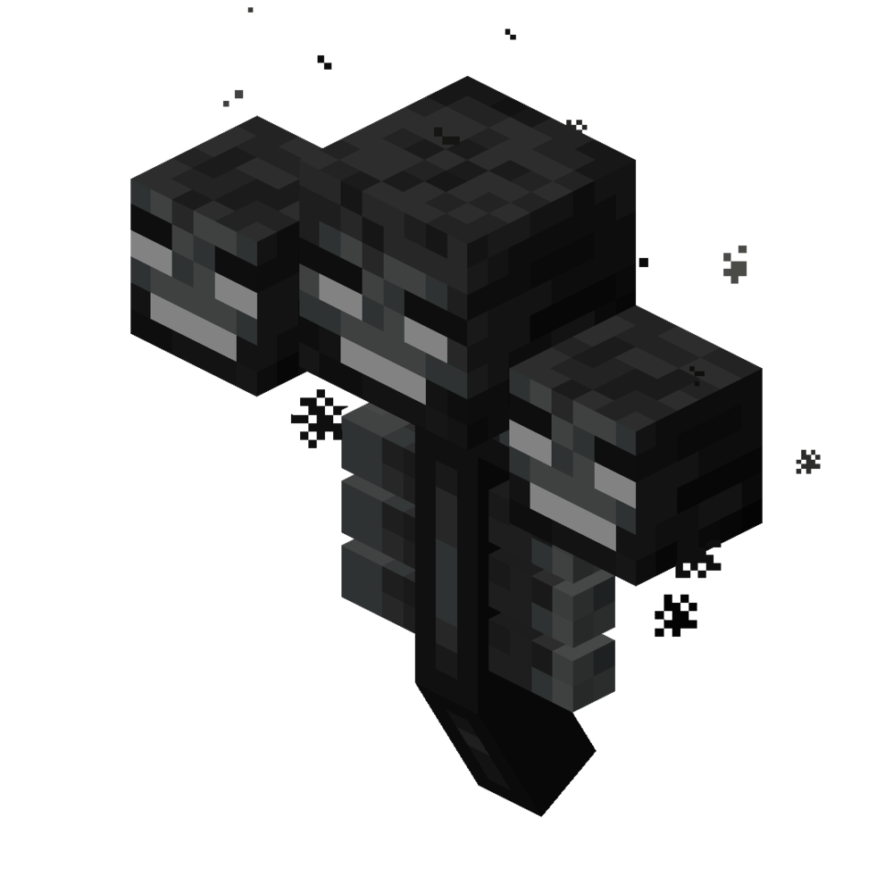
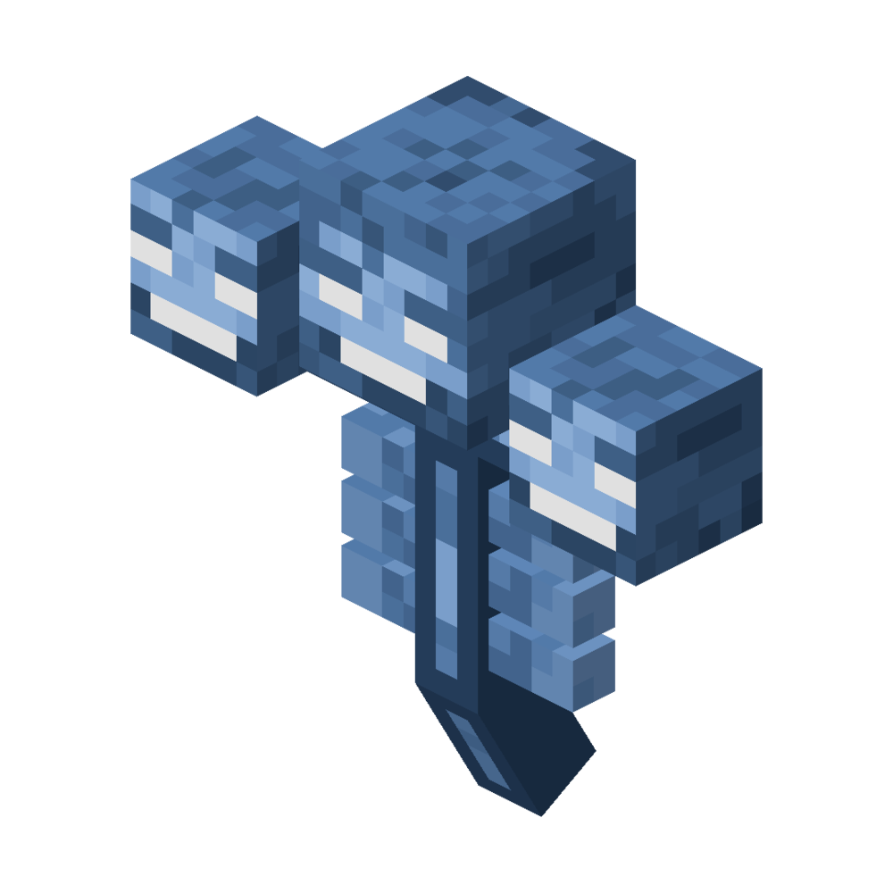

The Wither
The Wither is the second Mob Boss that you can fight. It has more health than the Ender Dragon. It will destroy anything in it's way. It will shoot skulls at living mobs.
The Wither at half health
When the Wither's at half health, the Wither will form Wither Armor which is only affected by melee attack. They will also summon 4 Wither Skeletons (only in Bedrock Editon). They don't fly but they hover over the ground.